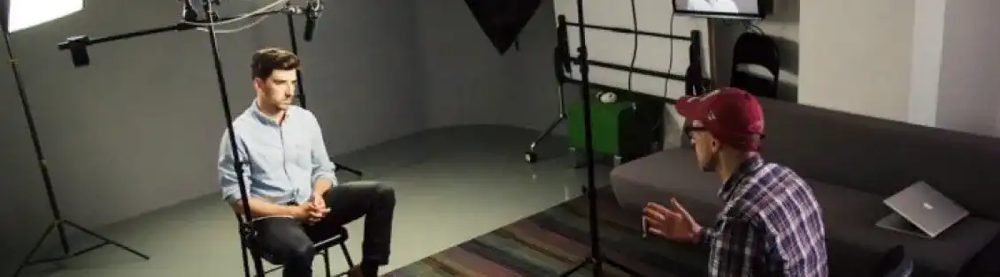
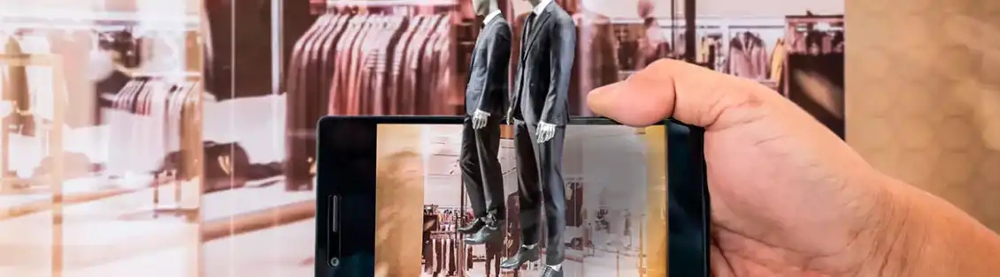

MASSILIA Le Marseille d'hier
L'avancée technologique
La technologie à avantagé de nombreuse personne. Désormais chaque artiste peut exprimer son travail via les réseaux sociaux et se créer un auditoire. On peut penser notamment à une personne qui chante très bien. L’avantage de la technologie peut être de s’exposer sur les réseaux sociaux pour essayer d’être repéré par des producteurs ou alors pour des castings.

Mais la technologie a aidé la médecine. En reprenant les propos sur la médecine. Pour autre utilisations on peut parler de réalité augmentée (AR) où cette dernière fait référence au concept d'infographie en direct ajoutée à la vision du monde réel. Il permet aux utilisateurs d'interagir avec un environnement numérique tout en restant dans le monde réel. En superposant des informations numériques sur le monde réel, il améliore votre perception du monde physiqueDepuis que la technologie RA a parcouru un long chemin, elle offre une meilleure utilisation pour le divertissement et l'aspect pratique. La réalité augmentée (AR) fusionne le monde réel avec des données générées par un ordinateur pour en créer une version améliorée. Par exemple, vous pouvez utiliser l’AR pour afficher les mises à jour du trafic en temps réel ou pour planifier vos activités quotidiennes. Un utilisateur peut également se promener et découvrir où se trouvent les cartes publiques ou comment se rendre quelque part. De cette façon, les gens utilisent la RA à des fins sociales et récréatives ainsi que pour le travail. Les applications de la réalité augmentée sont infinies dans la façon dont vous pouvez l'utiliser pour améliorer votre vie.

La technologie de réalité augmentée a parcouru un long chemin depuis sa création, il y a plus de 50 ans. Maintenant, cette technologie a des applications dans le divertissement, l'éducation et la navigation. Le plus grand obstacle pour cette technologie est la création de modèles 3D homogènes qui doit réalistes pour l'utilisateur. Cependant, une fois cet obstacle surmonté, la réalité augmentée révolutionnera la façon dont nous interagissons quotidiennement avec notre environnement !
.webp)